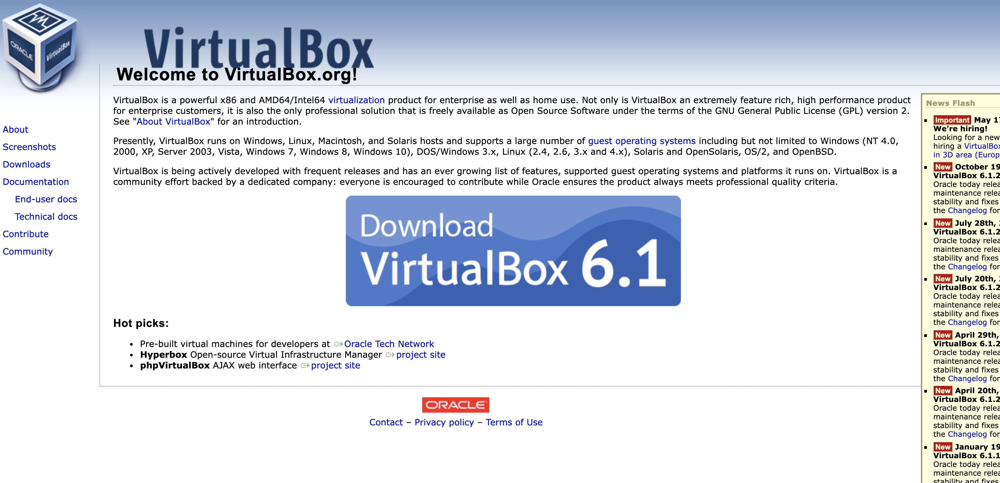
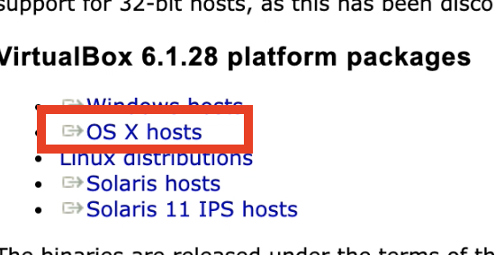
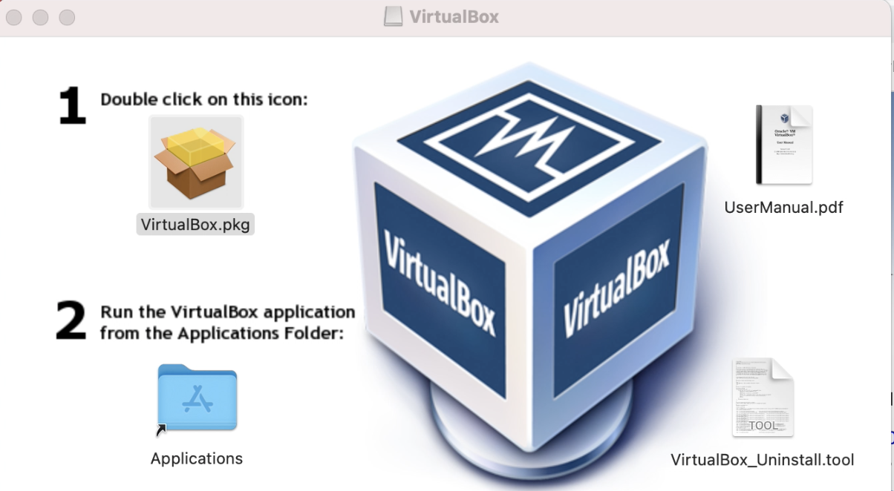

Virtualiser Windows sur MAC
Un petit blog sur comment installer windows comme machine virtuelle avec virtual box
Etape 1 : Installer VirtualBox
Pour ce faire, il faut ce rendre sur le site de virtual box et cliquer sur le boutton télécharger.
Ensuite, il faut cliquer sur le bouton OsX distribution
Puis l'on doit ouvrir le fichier dmg en double cliquant dessus. Une fois ouvert, une fenêtre (comme ci dessous) va s'ouvrir
Double cliquez sur le logo de "boite" et puis suivez les étapes de configuration classique :
Autoriser l'utilisation d'un paquet pour l'execution d'un programme -> Introduction Continuer -> Destination Installer sur le disque (par défaut) ou pour tout les utilisateurs -> Type d'installation VALIDER -> attendre -> Fin du programme
Ensuite, il va falloir redémarrer le Mac et VitualBox sera installer dans votre menu d'application
Etape 2 : Installer l'ISO de Windows
Rappel : Jusqu'à maintenant, nous avons installé le logiciel qui simule les composants d'un pc. Maintenant nous allons avoir besoin du système d'exploitation de ce PC : un ISO. Pour parler un peu plus de la technique, un iso est une image d'un disque à un moment donné...
Nous allons nous rendre sur le site officiel de microsoft (lien ci dessous) et répondre aux questions (Edition Windows 10 -> Langue Français)
https://www.microsoft.com/fr-fr/software-download/windows10ISO